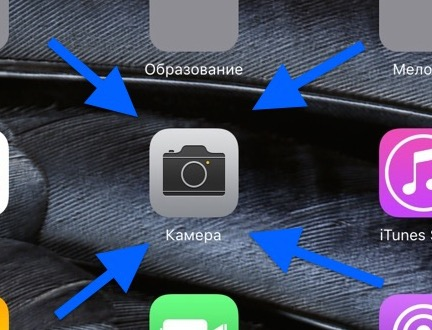
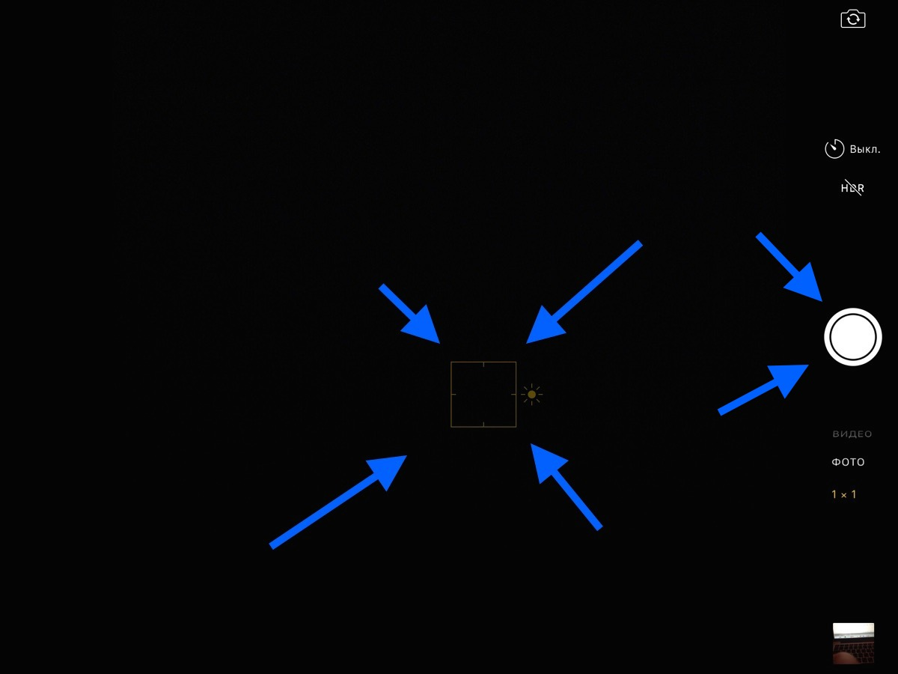
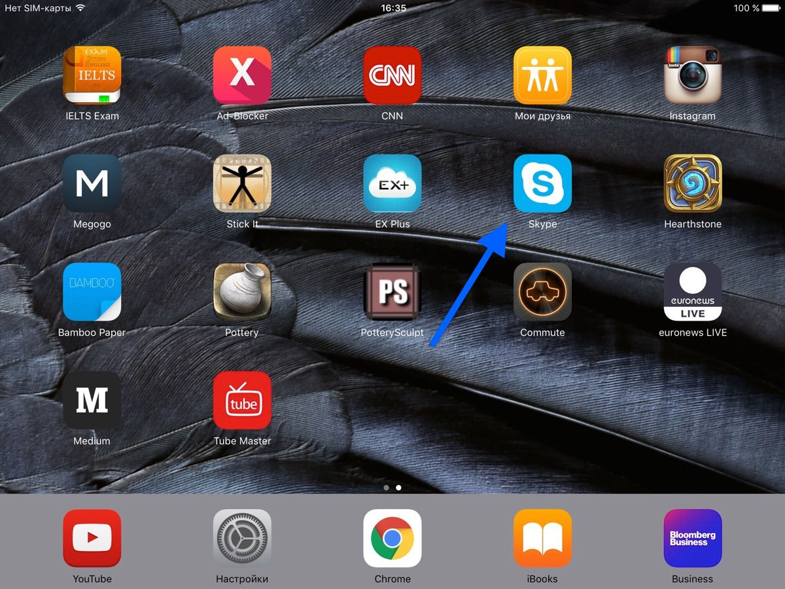
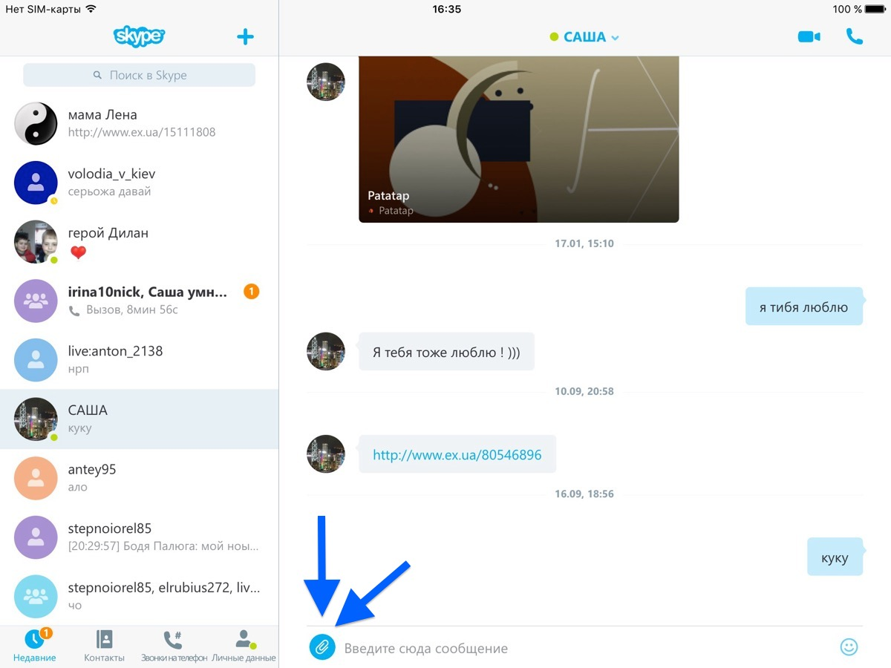
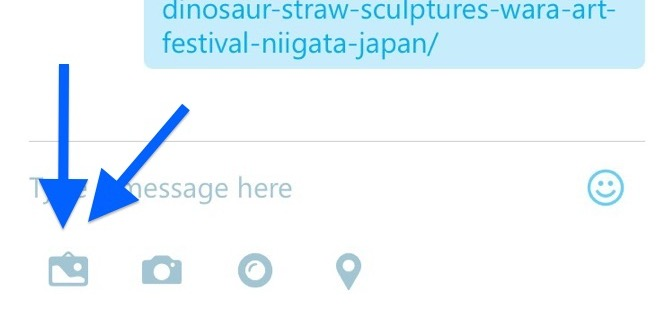
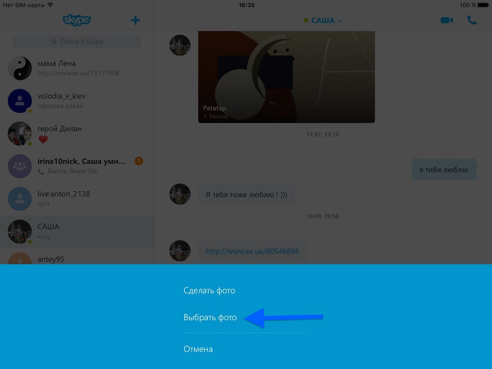
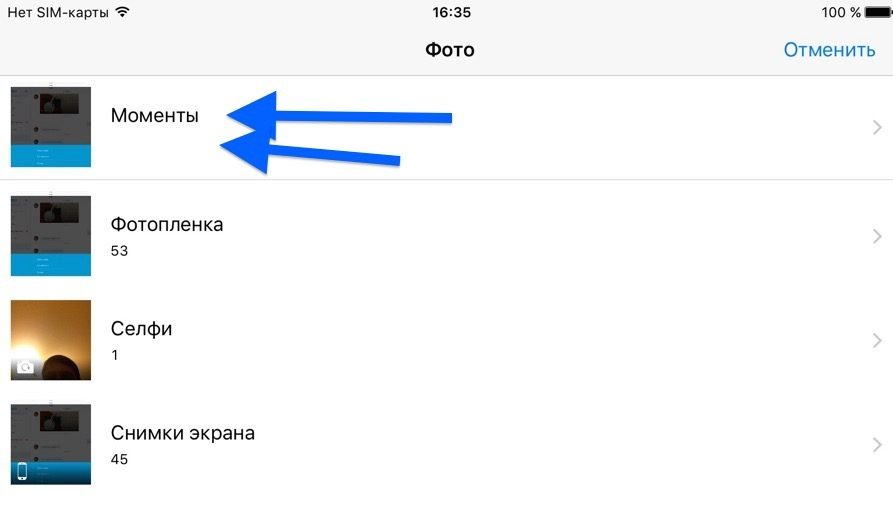

Запустить приложение "Камера"
Навести камеру на предмет и нажать пальчиком на на экран на то место, которое нужно чтобы было четким.
Появится желтый квадратик, который укажет четкость будущей фотографии.
Нажать белую кнопку - "Сфотографировать"
И так каждую страничку.
После того, как все странички сфотографированы, их можно отправлять через Скайп
Для этого запускаем "Скайп"
В Скайпе переключаемся на чат со мной и в нем в самом низу есть кнопочка - "Скрепка"
Нажимаем ее
Может оказаться что Скайп другой версии и кнопка может выглядеть не скрепкой, а как на этом скриншоте
Внизу появится запрос. Нужно выбрать что будем отправлять. В нашем случае "Фото"

После этого Скайп запросит откуда мы хотим отправить фото, новое или из сфотографированных.
Выбираем "Выбрать фото" из готовых.
Там появятся папки в которых хранятся фото. Нам нужно выбрать "Моменты"
В "Моментах" выбираешь фото, которое хочешь отправить.
Выбрав фото, на нем справа внизу нажать кнопку "Выбрать"
Все. Фото отправится по Скайпу и мой Скайп его автоматически примет.
Так нужно будет проделать с каждой фоткой. Нудно, но это только один раз.
Главное чтобы фотографии были "на весь экран" и четкие. Каждая страничка.